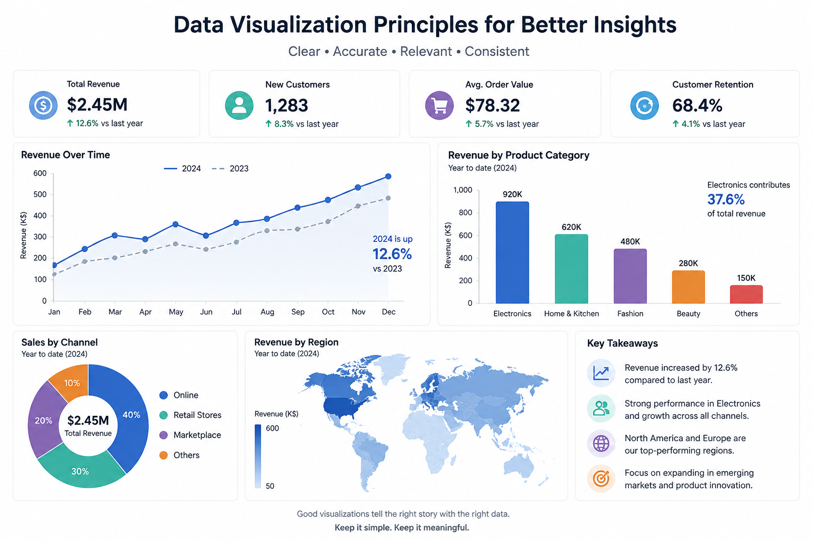

In data science, visualization is not just decoration - it’s a bridge between data and understanding. A well-designed chart can reveal relationships, trends, and outliers that tables of numbers can’t convey. However, effective visualization requires more than technical skill; it requires thoughtful design guided by principles of clarity, simplicity, and purpose.
“The greatest value of a picture is when it forces us to notice what we never expected to see.” - John Tukey
1. Focus on the Message
Before choosing a chart type, ask: *What story am I trying to tell?* Each visual should answer a specific question. A scatter plot might show correlation, a bar chart comparisons, and a line chart trends over time. Avoid clutter - if an element doesn’t support the message, remove it.
2. Simplify the Design
Simplicity is key. Use neutral backgrounds, limit color palettes, and avoid 3D effects. Overly complex visuals distract the reader from the insight. White space helps emphasize important information and gives the eye room to breathe.
3. Use Color Thoughtfully
Color is a powerful communication tool. Use it to highlight patterns or categories, not decoration. For accessibility, ensure sufficient contrast and avoid relying solely on color to encode information.

4. Label Clearly
Every axis, legend, and annotation should be easy to understand at a glance. Ambiguous or missing labels create confusion. If your audience has to guess what a number represents, the visualization has failed.
5. Choose the Right Tool
Today, a wide range of tools and libraries make it easier than ever to produce professional visuals - from matplotlib and ggplot2 to Tableau and Power BI. The key is to match the tool to the goal: quick exploration, interactive dashboards, or publication-ready figures.
6. Tell a Story with Data
Visualization becomes powerful when combined with narrative. Guiding the reader through a logical sequence - problem, data, insight, implication - transforms a chart into a story. The goal is not only to inform but also to persuade and inspire action.
By following these principles, we can create visualizations that empower decision-making and communicate complex findings effectively.
← Back to Blog